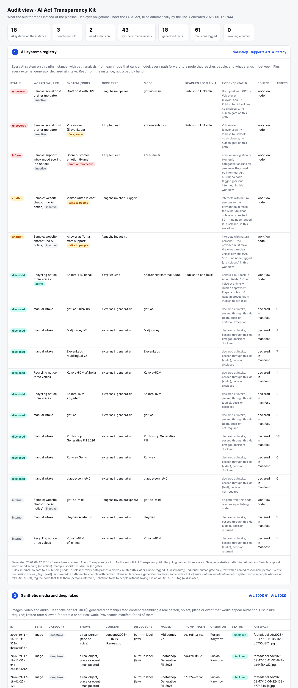

Art. 50 · ledger verified

AI Act Transparency Kit
An n8n module for the deployer side of Article 50: classification, burnt-in label, a human gate a named person signs, and an append-only hash-chained ledger in Postgres. The auditor's page is behind header auth and verifies the chain on every render.